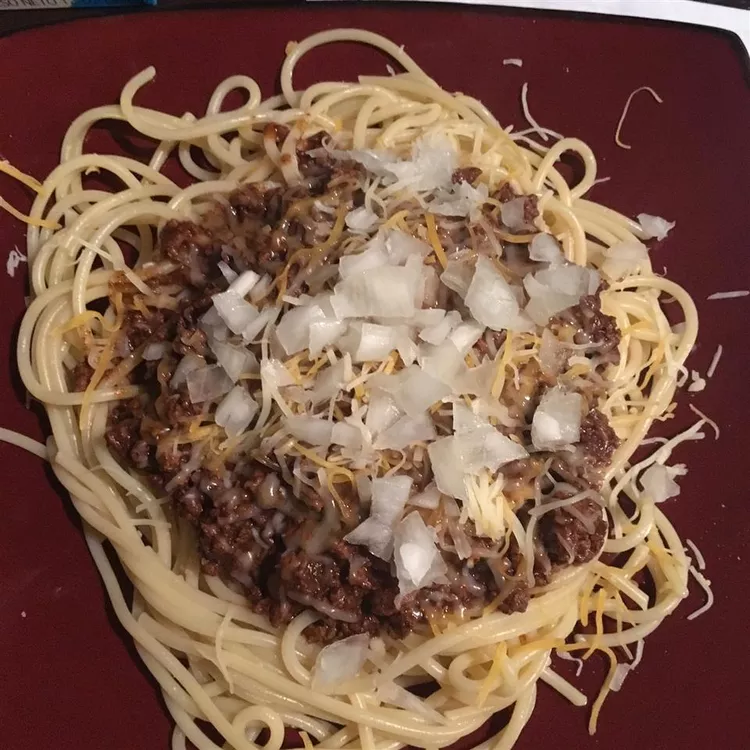

Cincinnati Chili

Description
This is genuinely upsetting.
Ingredients
- 1 tablespoon vegetable oil
- ½ cup chopped onion
- 2 pounds ground beef
- ¼ cup chili powder
- 1 teaspoon ground cinnamon
- 1 teaspoon ground cumin
- ¼ teaspoon ground allspice
- ¼ teaspoon ground cloves
- 1 bay leaf
- ½ (1 ounce) square unsweetened chocolate
- 2 (10.5 ounce) cans beef broth
- 1 (15 ounce) can tomato sauce
- 2 tablespoons cider vinegar
- ¼ teaspoon ground cayenne pepper
- ¼ cup shredded Cheddar cheese
Directions
- Heat oil in a large saucepan over medium heat. Add onion and cook, stirring frequently, until tender, about 6 minutes.
- Add beef, in batches if necessary, and cook, breaking up with a wooden spoon, until browned.
- Add chili powder, cinnamon, cumin, allspice, cloves, bay leaf, chocolate, beef broth, tomato sauce, cider vinegar, and red pepper. Stir to mix well. Bring to a boil. Reduce heat to low; cover and simmer 1 1/2 hours, stirring occasionally.
- It is the best if you now refrigerate overnight.
- Remove the bay leaf. Reheat gently over medium heat. Serve over hot, drained spaghetti. Top with shredded cheddar cheese.